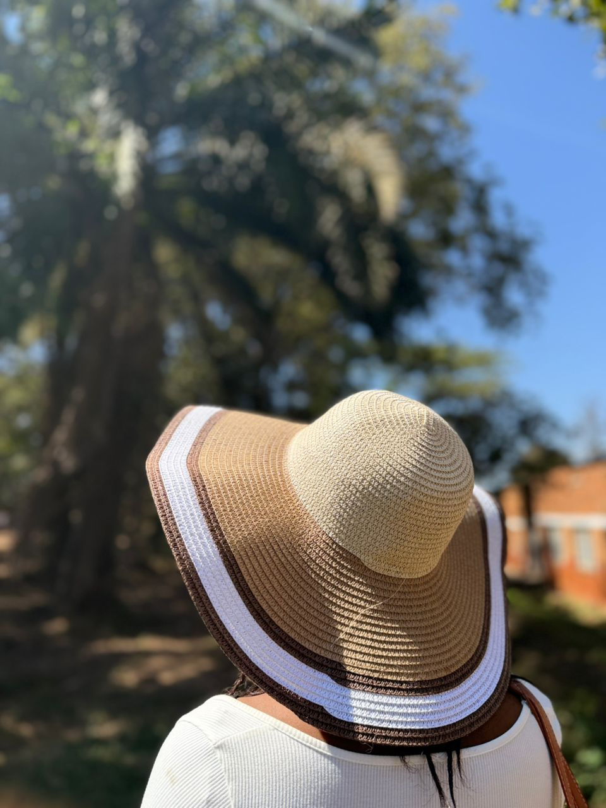
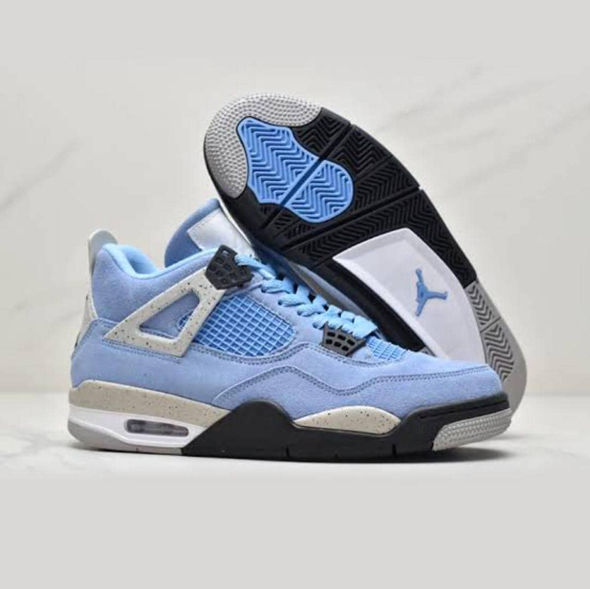

La Lecture
Plonger dans des univers de fiction ou apprendre de nouvelles technologies à travers des ouvrages spécialisés.
Ce qui m'inspire et m'anime au quotidien.
Plonger dans des univers de fiction ou apprendre de nouvelles technologies à travers des ouvrages spécialisés.

Découvrir de nouveaux horizons, cultures et gastronomies pour enrichir ma vision du monde.

Une source de motivation constante, qu'il s'agisse de Jazz, de Pop ou de musiques instrumentales pour coder.

Essentiel pour garder l'énergie nécessaire à mes projets et cultiver la discipline personnelle.